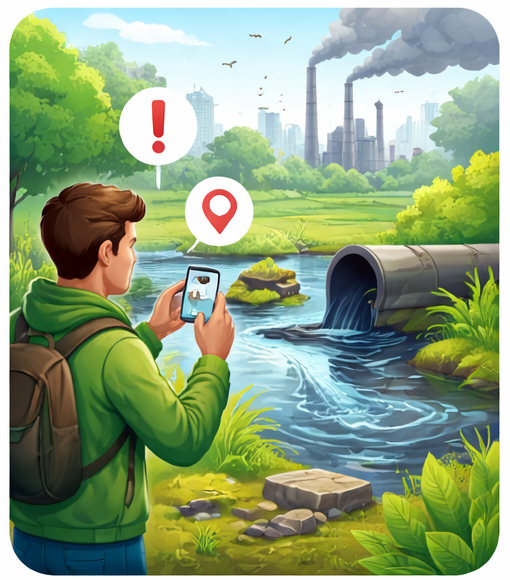
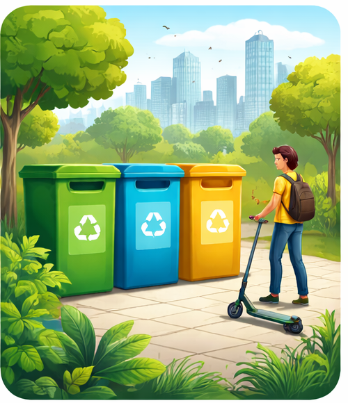

Olá cidadão! Seja bem vindo a EcoCity.
O EcoCity é uma plataforma digital criada para ajudar cidadãos a descartarem resíduos de forma correta e consciente.
O site reúne informações claras sobre onde e como descartar diferentes tipos de materiais, permite solicitar coleta de objetos de grande porte
e denunciar locais de descarte irregular, contribuindo para cidades mais limpas, organizadas e sustentáveis.
O EcoCity nasceu com o objetivo de reduzir os impactos ambientais causados pelo descarte inadequado de resíduos nos grandes centros urbanos. A plataforma busca centralizar informações e serviços relacionados à gestão de resíduos, facilitando o acesso da população a orientações corretas de descarte e aos serviços disponibilizados pelo município.
Denuncie aqui Agende uma ColetaLocais adequados para descarte de materiais.
Joinville/SC
-
Ecoponto do Parque São Francisco.
📍Rua Benício Felipe da Silva, 45 - Adhemar Garcia
Recebe materiais recicláveis como papel, plástico, metal e vidro; -
Ecoponto da Praça Tiradentes.
📍Rua Santa Catarina - Bairro Floresta
Ponto de entrega voluntária para recicláveis e vidro; -
Unidade Regional de Obras Oeste.
📍Rua São Brás, 184 - Vila Nova
Recebe resíduos eletrônicos, como computadores, celulares e cabos; -
Unidade Regional de Obras Nordeste.
📍Rua Lauro Schroeder, 915 - Aventureiro
Local para descarte de equipamentos eletrônicos e eletrodomésticos pequenos; -
Unidade Regional de Obras Sudeste.
📍Rua Ana Maria Roncálio de Souza, 59 - Paranaguamirim
Recebe lixo eletrônico e pilhas/baterias; -
Unidade Regional de Obras Centro-Norte.
📍Rua Guilherme, 604 - Costa e Silva
Ponto de entrega voluntária para eletrônicos e equipamentos tecnológicos; -
Centreventos Cau Hansen (PEV de recicláveis).
📍Av. José Vieira, Centro
Possui ecoponto para plástico, papel, metal, vidro e pilhas; -
Centro de Artes e Esportes Unificados (CEU) do Aventureiro.
📍Bairro Aventureiro
Recebe resíduos eletrônicos e pilhas.

